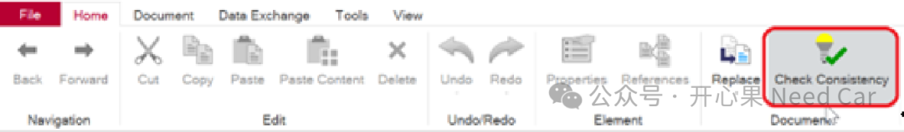
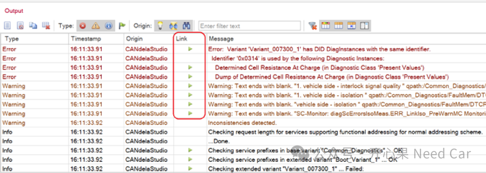
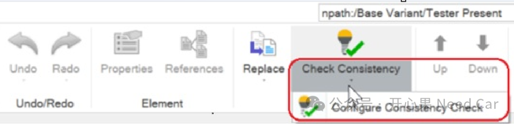
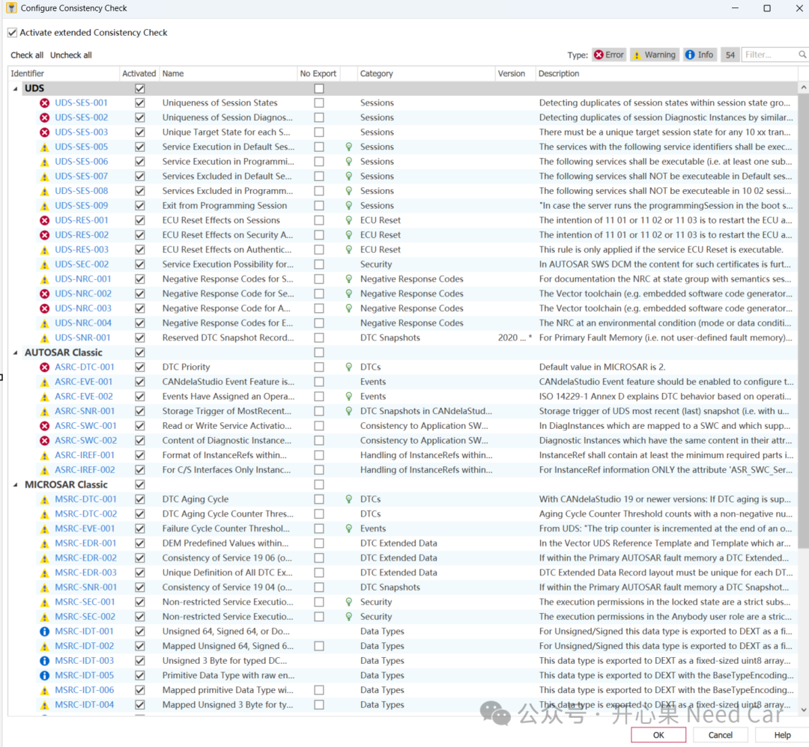

开心果 Need Car · 2025-08-22T06:22:00+08:00 · 微信原文
从事车载诊断的小伙伴，对于CANdelaStudio这个工具应该并不陌生。但是，在CANdelaStudio的软件使用中，是否想过：CANdelaStudio如何检查冲突或重复定义？引用是否有效？配置项之间逻辑是否合理等问题呢？
不用想了，CANdelaStudio v19之前的版本并没有可配置、可见的一致性检查功能。所以，对于用惯了CANdelaStudio的小伙伴来说，增加一个“Check Consistency”控件是多么美好的一件事情。就像其他配置工具（如 EB tresos、DaVinci Developer），通过一致性检查控件，及时发现问题并修复。如此，可避免工作的重复。
1、CANdelaStudio v19新增的“Check Consistency”规则可配置功能

当编辑完CDD（CANdela Diagnostic Description）文件以后，可以点击“Check Consistency”按钮（快捷键“F9”）对编辑的内容进行规则检查。

从CANdelaStudio v19版本开始，除了原有的检查规则以外，还新增了符合UDS、AUTOSAR、MICROSAR定义的检查规则，并且在CANdelaStudio中可以勾选是否使能对应的检查规则。
更多的规则的定义，描述以及版本信息等，可以点击下图红框处查看。

查看支持的规则，如下所示：

往期精彩回顾